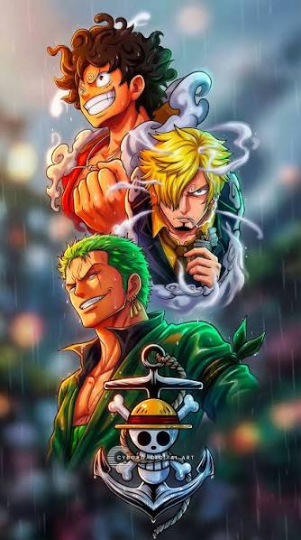
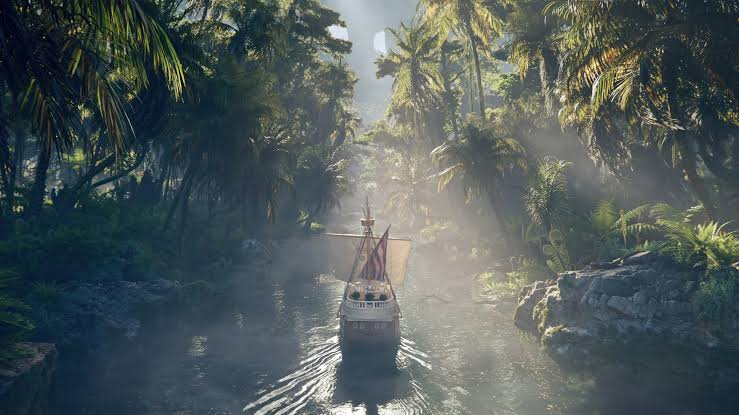

Step into a world of boundless imagination and join Monkey D. Luffy, the rubber-powered captain of the Straw Hat Pirates, as he navigates the treacherous Grand Line in search of the legendary treasure known as the One Piece. This beloved manga and anime series, crafted by the genius mind of Eiichiro Oda, promises an unforgettable experience. We have made this website for all beginners to One Piece and to help you get started!
A few faces to know
Meet the Straw Hats
Monkey D. Luffy is the protagonist and captain of the Straw Hat Pirates. Luffy is a cheerful and determined young man with the power of the Gum-Gum Fruit, which gives him the ability to stretch his body like rubber. He dreams of becoming the Pirate King and discovering the ultimate treasure, the One Piece.
Monkey D. Luffy
Captain
Sanji
Cook
Roronoa Zoro
Swordsman

Luffy, Sanji & ZoroCaptain, cook & swordsman · top to bottom

The adventure aheadA quiet voyage through a sunlit tropical waterway.
Tips + Where to Watch
Begin with the Manga or Anime
Choose whether you'd like to dive into the original manga series or experience the animated adaptation. The manga provides the original source material, while the anime brings the story to life with vibrant visuals and dynamic voice acting. Pick your preferred medium and start from the beginning to fully immerse yourself in the captivating world of One Piece.
Take Your Time
One Piece is a vast and ongoing series with over 1,000 chapters in the manga and hundreds of episodes in the anime. Don't rush through it—savor each arc, episode, and chapter to truly appreciate the intricate storytelling, character development, and world-building that Eiichiro Oda has crafted. Pace yourself and enjoy the journey.
Follow the Arcs
One Piece is divided into different story arcs, each focusing on a specific adventure or destination. Start with the "East Blue Saga," which introduces the main characters and sets the foundation for the grander narrative. From there, progress through the arcs chronologically, such as the "Alabasta Saga," "Skypiea Saga," and beyond. This will allow you to follow the character arcs and witness their growth over time.
Avoid Spoilers
One Piece has a rich and intricate plot with numerous surprises and plot twists. To preserve the element of surprise, be cautious about searching for information online or discussing the series with others who may inadvertently reveal spoilers. Embrace the joy of discovering the story organically.
Where to Watch
You can watch One Piece on Netflix or online. (Note: Netflix is still catching up and is quite a bit behind.)